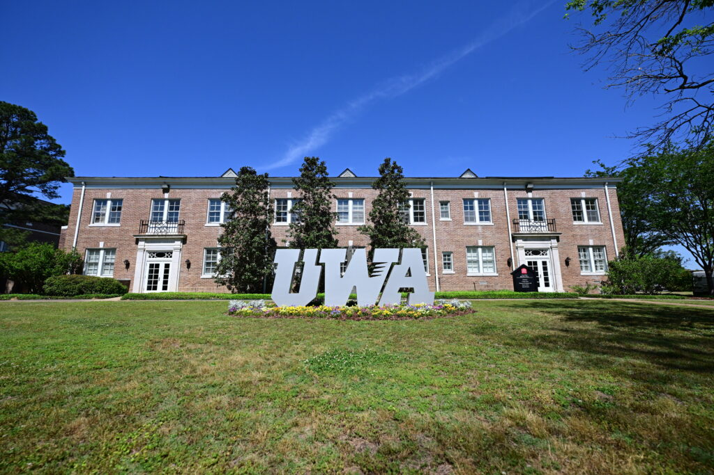

West Alabama College of Business Student Managed Investment Fund

About Us
The Red & White Fund is a student-managed investment fund at the West Alabama College of Business. Our mission is to provide students with hands-on experience in managing real investment portfolios while fostering a deep understanding of financial markets and investment strategies.
Our Vision
Our vision is to cultivate the next generation of investment professionals by providing a rigorous, hands-on learning environment that emphasizes ethical decision-making, analytical thinking, and strategic investment management.
Our Mission
Our mission is to empower students with the knowledge, skills, and experience necessary to excel in the field of investment management. We aim to bridge the gap between academic theory and real-world practice, preparing our students for successful careers in finance.